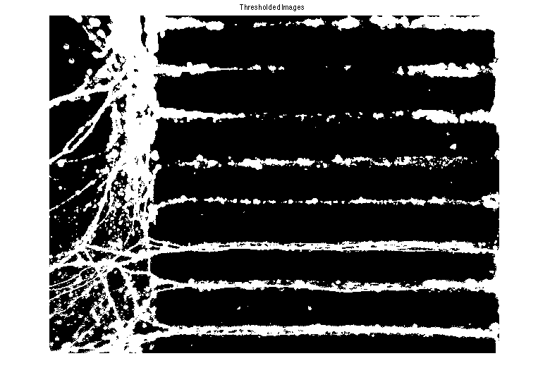
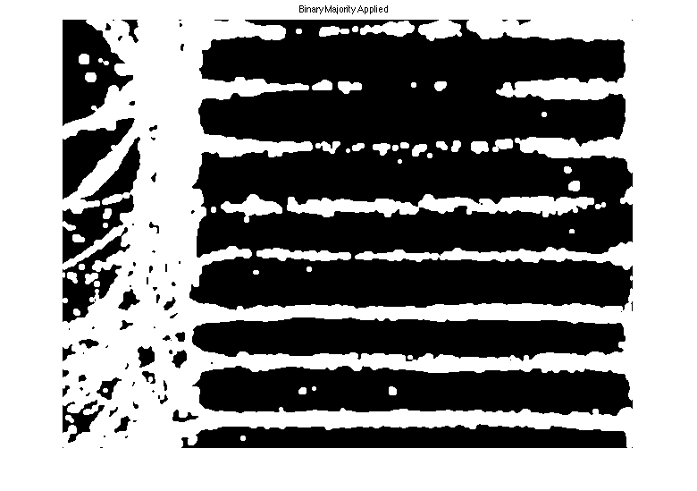

Homework 1
Ashutosh Priyadarshy
Digital Image Processing
Spring 2012
University of Virginia
Axon & Neuron Segmentation
Images: controlneuron.jpg axons.jpg
Contents
Initial Loading and Setup
Loading images and convert to grayscale.
close all; clear all; % Load the RGB images. axons = imread('axons.jpeg'); controlneuron = imread('controlneuron.jpeg'); % Print out the original colour image. % figure; imshow(axons); % title('Original Colour Image'); % figure; imshow(controlneuron); % title('Original Colour Image'); % Convert the iamges to grayscale intensity images. axons = rgb2gray(axons); neuron = rgb2gray(controlneuron); % Display grayscale image. % figure; imshow(axons); % title('Grayscale Image'); % figure; imshow(controlneuron); % title('Grayscale Image'); % These images are both underexposed -- try and fix this. axons = adapthisteq(axons); neuron = adapthisteq(neuron);
Thresholding Procedure
% Create the intensity histogram. [pdf_axons, x_axons] = imhist(axons); [pdf_neuron, x_neuron] = imhist(neuron); % Find the cumulative distribution of the above histograms. for i = 1:length(x_axons) cdf_axons(i) = sum(pdf_axons(1:i)); cdf_neuron(i) = sum(pdf_neuron(1:i)); end % Set some bounds...arbitrary (kinda). lb = 0.74; ub = 0.78; % Find the halfway point or so. for i = 1:length(x_axons) if (cdf_axons(i) >= lb .* cdf_axons(end) && cdf_axons(i) <= ub .* cdf_axons(end)) critical_index_axons = i; end if (cdf_neuron(i) >= lb .* cdf_neuron(end) && cdf_neuron(i) <= ub .* cdf_neuron(end)) critical_index_neuron = i; end end % Set the thresholds. T_axons = critical_index_axons; T_neuron = critical_index_neuron; % Binary Threshold the images. axons = axons > T_axons; neuron = neuron > T_neuron; % Show the thresholded images. figure; imshow(axons); title('Thresholded Images'); figure; imshow(neuron); title('Thresholded Images');
Image Segmentation
% Create a Structuring Element. se_a_sq = strel('square', 5); % Dilate the image and and show. axons = imdilate(axons, se_a_sq); neuron = imdilate(neuron, se_a_sq); figure; imshow(axons); title(' Dilation Applied '); figure; imshow(neuron); title(' Dilation Applied '); % Binary majority and show. axons = bwmorph(axons, 'majority'); neuron = bwmorph(neuron, 'majority'); figure; imshow(axons); title(' Binary Majority Applied '); figure; imshow(neuron); title(' Binary Majority Applied '); % Open image. axons = imopen(axons, se_a_sq); neuron = imopen(neuron, se_a_sq); % Erode the Image. axons = imerode(axons, se_a_sq); neuron = imerode(neuron, se_a_sq);
Final Images
figure; imshow(axons); title('FINAL IMAGE: Open/Erode Operation Performed'); figure; imshow(neuron); title('FINAL IMAGE: Open/Erode Operation Performed');
Image Statistics
axon_percent = sum(sum(axons))./(size(axons,1) * size(axons, 2)) neuron_percent = sum(sum(neuron))./(size(neuron,1) * size(neuron, 2))
axon_percent =
0.2673
neuron_percent =
0.2997